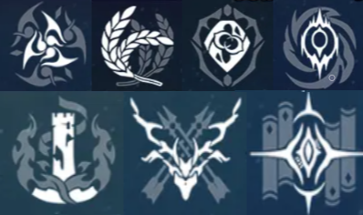

Sobre
Honkai star-rail é um jogo de área aberta e batalha em turnos, lembre-se é área aberta e não mundo, podendo explorar o que ele propõem e sentir cada troca de ambiente como de um planeta afetado por um inverno infinito causado por um stelaron até uma nave gigantesca navegando o espaço abrigando uma civilização inteira, tudo isso acontece após o ataque a uma nave na qual diversos caçadores de stelaron se abrigam na qual nosso personagem principal é criado, usando o poder de um stelaron para manifestar o caminho que o Aeon da destruição nos concedeu, após isso entramos para o expresso astral, um trem espacial que viaja imensas distâncias em segundos, onde conhecemos 7 de Março, Dan heng, Himeko, pompom entre outros, a cada vez que viajamos descobrimos mais historias e desbravando tudo que esse universo oferece
.jpg)
Personagens
Os personagens são o que você usa para combater inimigos podendo utilizar até quatro no mesmo time, cada personagem tem uma função diferente definida pelo seu caminho que também será explicado, existem dos mais diversos personagens tendo os DPS, tankers, shilders, healers, buffers e de-buffers, porém uma equipe de suportes apenas n chega muito longe por isso é sempre bom utilizar um DPS junto a um healer e um shilder e o quarto pode ser tanto um buffer, de-buffer, tanker ou até mesmo um segundo DPS, porém é de extrema importância um suporte, o jogo tem a mecânica de batalha em turnos não há como desviar dos ataques a não ser com escudos ou redirecionando ataques inimigos para um outro personagem, mas o personagem ainda sim pode ser derrotado mostrando que ainda sim é válido haver um healer.

Caminhos
Os caminhos são oque definem a função e agilidades do personagem sendo elas: destruição, erudição, caça, preservação, harmonia, inexistência e abundância, normalmente a caça são personagens voltados pra dano, preservação para a proteção dos aliados ou a própria, erudição causando ataques em múltiplos inimigos de uma vez, abundância sendo para suporte e cura, harmonia como buffer para os aliados, inexistência para de-buffer aplicando penalidades e destruição utilizando seu PV para aumentar seu dano

Elementos
Os elementos não são algo muito importantes porém não se pode negligenciar, alem do mais são eles que qubrão a defesa do inimigo, são sete elementos ao todo, sendo eles: vento, fogo, raio, físico, gelo, quântico e imaginário, os quatro primeiros não fazem muita diferença, causando danos respectivos ao elemento e podendo acumular para durar mais turnos, gelo se destaca um pouco a mais por aplicar congelamento aos inimigos podendo atacar os inimigos mais vezes, quantico atrasa as ações dos inimigos possibilitando atacar mais vezes, imaginário por sua vez aplica o efeito de Prisão que reduz a velocidade do oponente e o empurra de volta para a próxima ação